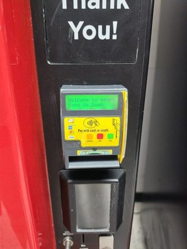
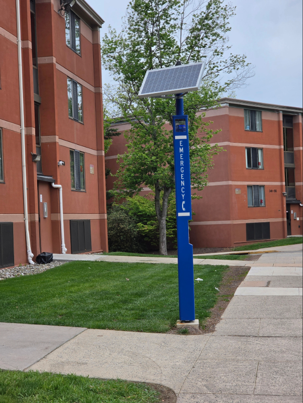
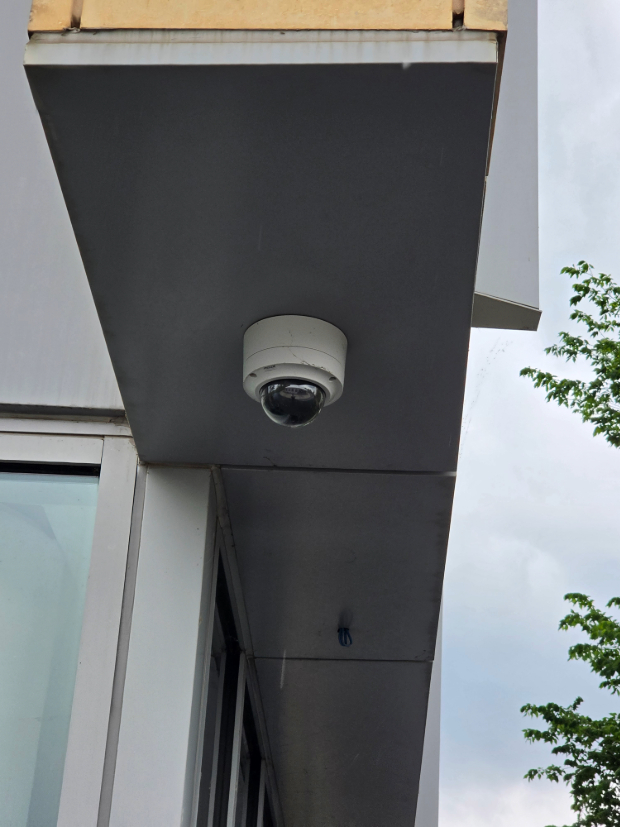
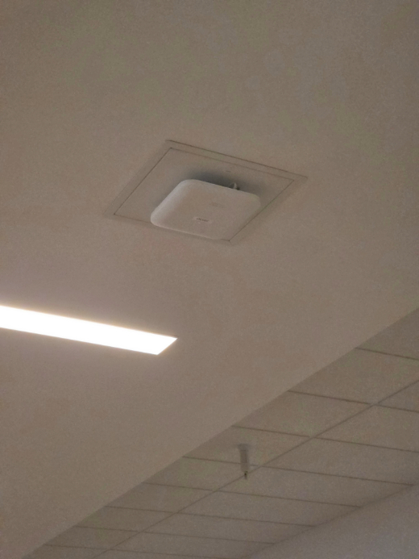
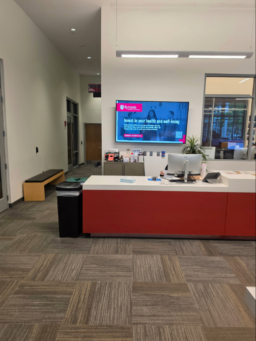
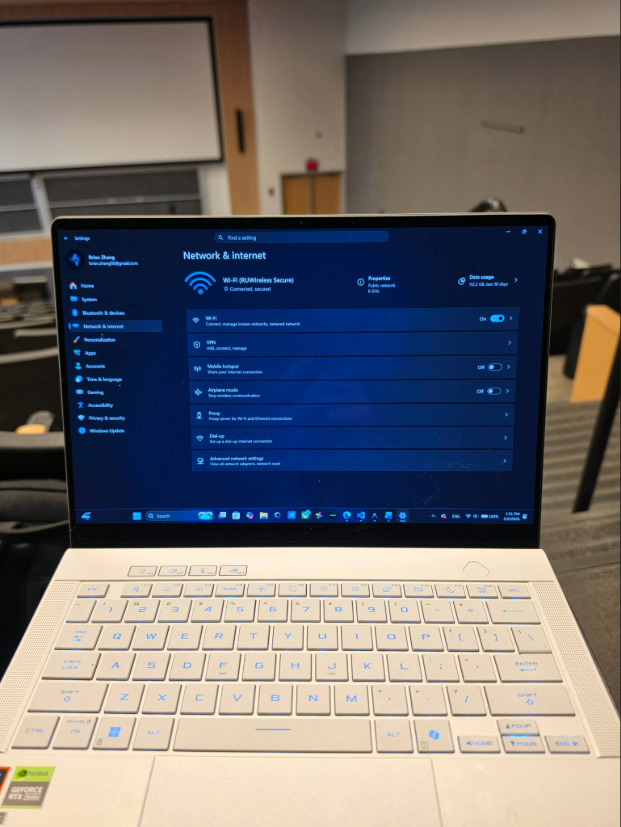

I woke up fifteen minutes late. My phone battery was hovering at a perilous twelve percent, I hadn't eaten breakfast, and I had a midterm review session sitting squarely on the other side of the Rutgers campus. In moments of pure, unadulterated rushing, the human brain stops processing its environment analytically. Instead, it shifts into a mode of total reliance on convenience. You stop looking at the buildings you pass, the doors you open, and the terminals you touch. You just need things to work.
As I threw my backpack over my shoulder and started my frantic walk to class, I realized something unsettling. Every single convenience I relied on during that fifteen-minute commute required me to interact with an insecure physical-digital interface. We tend to think of campus safety in terms of physical barriers—heavy doors, security guards, and well-lit paths. But modern campus safety is actually an invisible, layered surface of digital nodes. This essay traces a single, routine walk to class to demonstrate how our daily routines force us to blindly trust vulnerable hardware, trading our digital security for physical convenience.
Sequence 1: The Departure

The first obstacle of the day is simply leaving the residential zone. The heavy metal doors of the dormitory provide a profound illusion of physical safety. They are thick, imposing, and lock automatically with a reassuring mechanical thud. However, the mechanism controlling that heavy lock is entirely digital, and often astonishingly outdated. As I tapped my Rutgers ID against the black plastic reader, I was interacting with legacy 125kHz RFID technology.
While the physical door is built to withstand blunt force, the digital key is broadcasted openly in the air. When students rush out of the building in large groups, tapping their cards in quick succession, they create a dense environment of unencrypted radio frequencies. A malicious actor wouldn't need a crowbar to bypass this physical security; they would only need a concealed tool like a Flipper Zero to stand nearby and clone the digital signal right out of the air. The physical security of the building is entirely compromised by the vulnerability of its digital gatekeeper.

A few steps past the door, my stomach reminded me I had skipped breakfast. I stopped at a vending machine in the lobby, pulling out my phone to use tap-to-pay. This is the epitome of the "vulnerability of convenience." These payment terminals are installed in public, highly trafficked, and fundamentally unmonitored hallways.
Because we are in a rush—and because we assume the university has secured the premises—we do not inspect the hardware. We tap our phones or swipe our credit cards without a second thought. This blind trust makes these physically exposed machines prime targets for tampering, such as the installation of card skimmers or NFC replay attacks. We trade the security of our financial data for the convenience of a quick snack on the way out the door.
Sequence 2: The Open Campus

Stepping out onto the campus pathways, the environment shifts from restricted access to open public space. Along the sidewalk stands a Blue Light emergency phone. Visually, it is the ultimate symbol of physical campus safety—a direct line to emergency services designed to make students feel secure when walking alone. But viewed through the lens of the digital safety layer, it is something else entirely.
The Blue Light is a centralized node sitting on the campus network. It requires power, a data connection, and maintenance access. While it exists to protect physical bodies, its existence creates another point of exposure on the university's digital attack surface. It is a reminder that even the infrastructure built explicitly to keep us safe is still bound to the vulnerabilities of the network it runs on.

Continuing down the path, I looked up and noticed a dome security camera mounted outside an administrative building. We have become entirely desensitized to these physical objects, viewing them simply as deterrents against physical crime. However, a modern security camera is fundamentally a digital network node. It takes our physical, analog movements and translates them into a permanent digital record stored on a server.
The vulnerability here is twofold. First, we lose control of our physical privacy, as our location data is constantly logged. Second, because many of these cameras are cheap, Internet-of-Things (IoT) devices, they are frequently shipped with default passwords and unpatched firmware. The physical device meant to secure the building often becomes the exact digital vulnerability a hacker uses to infiltrate the network.
Sequence 3: The Academic Perimeter

I finally arrived at the academic building. Unlike the dormitory, the physical doors here are wide open, welcoming the public into a collaborative educational space. However, this open-door policy creates a fascinating paradox: the university wants the physical building to be accessible to everyone, but the digital network inside is supposed to be secure. As I walked down the hallway, I noticed an exposed Ethernet port on the wall and a Wi-Fi router hanging low from a drop ceiling.
Because anyone can walk into the building off the street, anyone can physically access this network hardware. A malicious actor could simply walk into an empty classroom and plug a rogue device—like a hardware keylogger or a network sniffer—directly into the university's digital backbone. The physical openness of the campus inherently undermines its digital perimeter.

Outside the lecture hall, a massive Smart TV displayed announcements for upcoming club meetings. These digital displays are ubiquitous on modern campuses, serving as digital bulletin boards. Yet, they are frequently neglected by IT departments. They are Internet of Things (IoT) devices running outdated software, often left connected to the public Wi-Fi network with their Bluetooth or casting features enabled.
These screens represent a highly visible physical-digital vulnerability. Because their physical USB ports are exposed and their wireless protocols are unsecured, they are incredibly easy to digitally hijack. They stand as glowing monuments to the difficulty of securing a sprawling, constantly evolving campus network.

I slipped into the back of the lecture hall just as the professor began speaking. I opened my laptop, and within seconds, it automatically connected to "RUWireless Secure." The journey was over, but the digital exposure had just peaked. As I sat there, I realized that I was the final vulnerability. By carrying a device that automatically shakes hands with the network, I had brought the attack surface into the room with me.
My laptop was now sitting on a massive local network alongside hundreds of other unverified devices. The physical journey was complete, but my digital footprint for the day was firmly established, recorded by the routers, logged by the access points, and stored on the servers.
Conclusion
I made it to class on time, I wasn't late, and my coffee was paid for. On the surface, the fifteen-minute commute was a complete success of modern campus infrastructure. But tracing the physical-digital vulnerabilities of that short walk reveals a different reality.
The campus "Digital Safety Layer" is not an impenetrable, high-tech firewall. It is a messy, physical landscape of exposed card readers, public USB ports, unpatched televisions, and open doors. Our daily routines require us to interact with dozens of these vulnerable interfaces, forcing us to constantly trade our digital privacy and security for physical convenience. As the tools to exploit these vulnerabilities—like the Flipper Zero or the HackRF—become cheaper and more accessible, true security on campus will require more than just strong passwords. It will require a fundamental awareness of the physical hardware we touch, tap, and trust every single day.